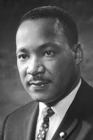

Martin Luther King Jr. on January 15, 1929, in Atlanta, Georgia. King led the 1955 Montgomery bus boycott and later became the first president of the Southern Christian Leadership Conference (SCLC). As president of the SCLC, he then led an unsuccessful 1962 struggle against segregation in Albany, Georgia, and helped organize the nonviolent 1963 protests in Birmingham, Alabama. He helped organize the 1963 March on Washington, where he delivered his famous "I Have a Dream" speech on the steps of the Lincoln Memorial.
King was posthumously awarded the Presidential Medal of Freedom and the Congressional Gold Medal. Martin Luther King Jr. Day was established as a holiday in cities and states throughout the United States beginning in 1971; the holiday was enacted at the federal level by legislation signed by President Ronald Reagan in 1986. Hundreds of streets in the U.S. have been renamed in his honor, and a county in Washington was rededicated for him. The Martin Luther King Jr. Memorial on the National Mall in Washington, D.C., was dedicated in 2011.
On October 14, 1964, King won the Nobel Peace Prize for combating racial inequality through nonviolent resistance. In 1965, he helped organize the Selma to Montgomery marches. In his final years, he expanded his focus to include opposition towards poverty, capitalism, and the Vietnam War. King was fatally shot by James Earl Ray at 6:01 p.m., April 4, 1968, as he stood on the motel's second-floor balcony. The bullet entered through his right cheek, smashing his jaw, then traveled down his spinal cord before lodging in his shoulder.
I am paying tribute to Martin Luther King Jr. today because of his efforts against racial segregation and fight for equality between whites and blacks.
